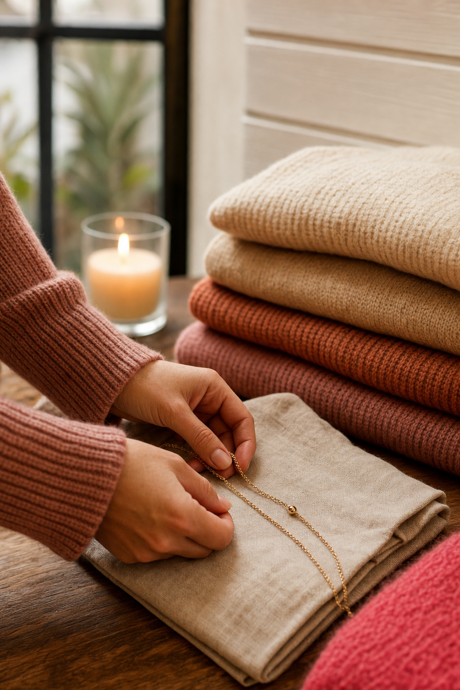
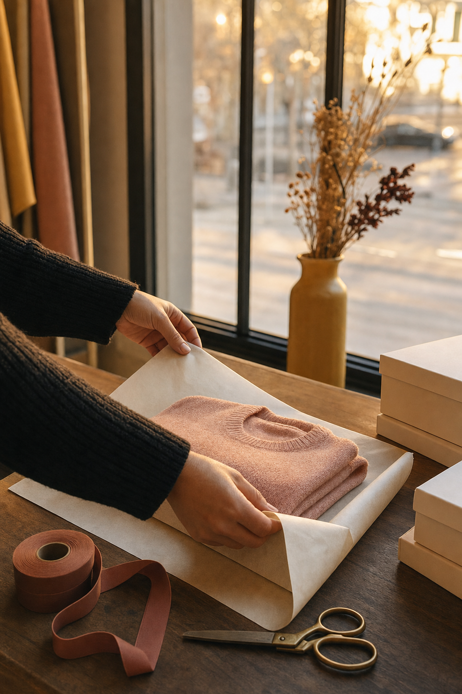

01The read
Fifteen years of Hale House.
Bekah, I'm Nelson Taylor, and I make brand content in Dallas–Fort Worth: direction, camera and edit. I found my way to Hale House through the listing for its 15th Anniversary Party on Nov. 12, then read through your site and your Instagram. Congratulations on fifteen years.
The first thing that struck me is how much lives in one room on Camp Bowie Boulevard: clothing and accessories, jewelry, candles, pillows, home and gift. Your site says who it's all for:
“Statement-driven pieces for the woman whose social calendar earns the wardrobe.”— shophalehouse.com
A shop like that is styled before it's sold. What a content day adds is the room itself, in motion: the tables, the shelves and the windows, filmed the way they're set, as a bank of vertical video and stills that runs alongside everything you already post.

02The idea
Set by hand.
The idea is a weekly format. Every video opens on a bare surface in the shop: a table, a shelf, the wrap counter. Then hands bring the pieces in one at a time. A sweater folded onto the stack. A necklace laid on linen. A candle lit at the back of a shelf.
The cut ends on the finished table, the way a guest sees it on the way in. Each week keeps the opening and changes the table.
It gives the feed a rhythm of its own and shows the styling that goes into the room. Hands and pieces carry every frame, so no one needs to be on camera.

03What we'd shoot
One day, morning to lamplight.
One day at the shop, scheduled around you. A quiet day, or the hours before opening, keeps the room calm for the camera. Only hands, pieces and the room in frame.
-
No. 1 · before open
Creative direction — treatment frames, not final footage. Before open
Light coming across the floor before the doors open. A slow wide to open the quarter.
-
No. 2 · laid on linen
Creative direction — treatment frames, not final footage. Laid on linen
A necklace set down, then another beside it. Detail stills on the A7RV and a slow push along the table on the FX6.
-
No. 3 · the table, set
Creative direction — treatment frames, not final footage. The table, set
The Set by Hand opener, filmed from one fixed angle so each week's table lands in the same frame.
-
No. 4 · the fold
Creative direction — treatment frames, not final footage. The fold
Sweaters folded and stacked, a cardigan squared on the pile. The quiet part of the job that makes a table look effortless.
-
No. 5 · the wrap counter
Creative direction — treatment frames, not final footage. The wrap counter
Tissue folded around a piece, ribbon pulled and cut. The last thing a guest sees before the door.
-
No. 6 · last light
Creative direction — treatment frames, not final footage. Last light
The front windows going gold, then the lamps on and a candle lit on a shelf. It ends every video on the same quiet note.
Every setup gets photographed as well. The stills bank comes from the same light as the video, so a post, a story and a product page can all look like the same shop.
04The day
What the day includes.
- 01One shoot day at Hale HouseDirected and shot by me, in the shop on Camp Bowie.
- 02Sony FX6 + Sony A7RVCinema motion on the FX6; stills and hybrid on the A7RV.
- 03Vertical-firstComposed for the phone: all of it cut 9:16 for Reels, TikTok and Shorts.
- 04An edited set of vertical videos + a stills bankBoth from the one day, made to carry a quarter.
- 05Two rounds of editsWith the finished set in about two weeks.
Anything past that, we'd talk through on a call.
05Who
Behind the camera.
Fourteen years of design and creative direction sit behind Taylormade Creative, my studio in Dallas–Fort Worth. These days most of what I make is brand content: I plan it, film it on the FX6 and A7RV, and edit it.
Clients have included TONI&GUY Academy, Dreamcatchers Hair and It's a Secret Med Spa, along with Lava Cantina and KFC. I also shipped an iOS app, Run It UP! Dallas.
A styled room asks for patience: the light moving across a table, a hand adjusting a fold. Framing and editing both sit with me, so every shot is planned around the cut from the start.
06A call
A conversation, in your own time.
Should Set by Hand sound like Hale House to you, a twenty-minute call is enough to go through the day together and shape it around the shop: what to keep, what to swap, what I haven't thought of.
If the timing is wrong, “not yet” is an answer I'm glad to hear.
Email NelsonFounder & Creative Director · Taylormade Creative
(817) 707‑1291 · taylormademd@gmail.com
www.taylormadecreative.net · @taylormade_creative